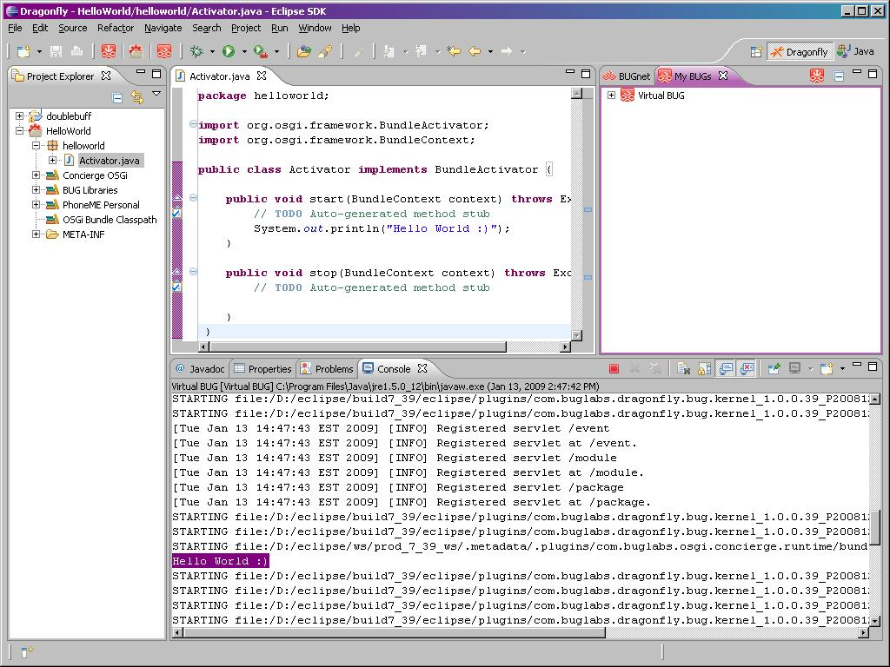

Creating a Basic Application
Create a basic application for BUG that displays a message on the system output console.
- If Eclipse, switch perspective to the Dragonfly perspective. (Hint: Go to Window > Open Perspective > Other)
- Select the New BUG Project icon
 in the toolbar.
in the toolbar.
- In the New BUG Project window, in the Name field, type: HelloWorld
- Click Finish.
- In left-side Project Explorer view, expand the node for the Hello World application
- Expand the node for the helloworld package
- Double-click on Activator.java to edit it
- In the Java editor, in the start method of activator class, type: System.out.println("Hello World :)");
so that it looks like this:
package helloworld;
import org.osgi.framework.BundleActivator;
import org.osgi.framework.BundleContext;
public class Activator implements BundleActivator {
public void start(BundleContext context) throws Exception {
// TODO Auto-generated method stub
System.out.println("Hello World :)");
}
public void stop(BundleContext context) throws Exception {
// TODO Auto-generated method stub
}
}
- Go to File > Save to save Activator.java.
- Click Run, Run As Virtual BUG to launch your application in the Virtual BUG.
- Watch the output on the Console tab in Eclipse/Dragonfly for your "Hello World :)" message. The text is highlighted in the screen shot below.
